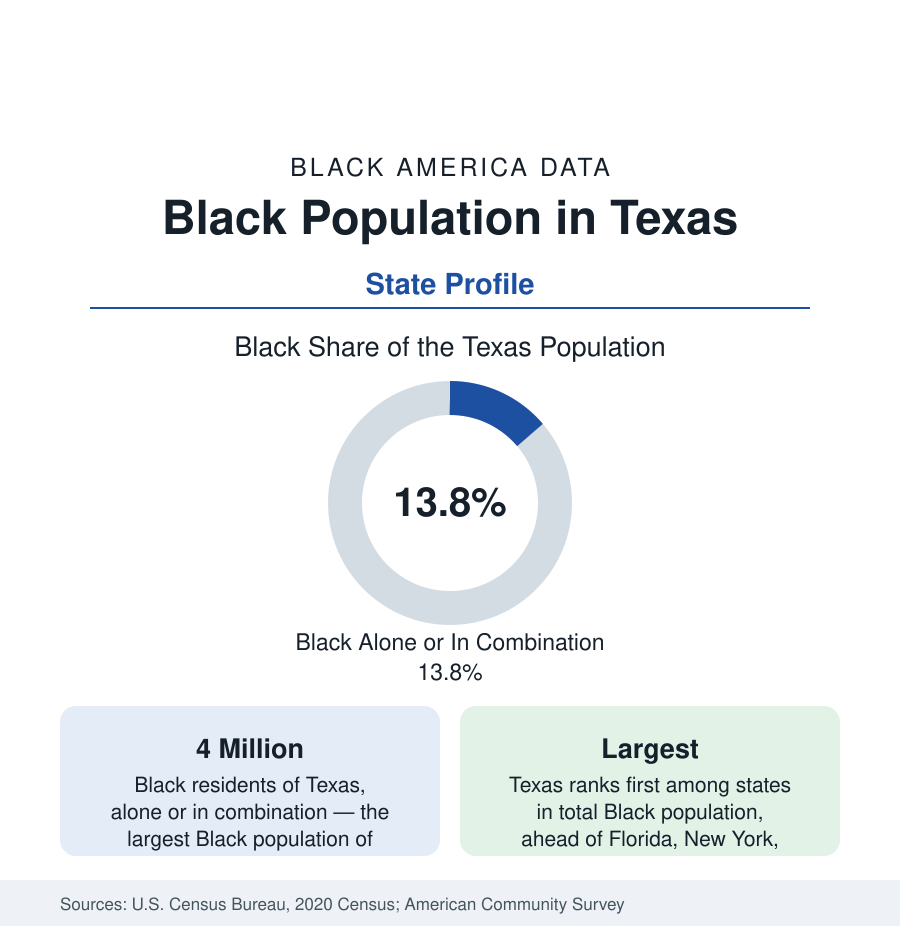

Black Census
Black Population in Texas: Size, Cities, and Growth
Texas holds the largest Black population of any state — about four million people, roughly one in seven Texans. The census profile of Black Texas.

Texas holds the largest Black population of any state in the union. The decennial census counted about four million Black Texans — Black alone or in combination with another race — roughly 13.8 percent of the state's population, with Black alone accounting for about 3.6 million, or 12.2 percent. Scale is the headline: Texas's Black population exceeds the total population of many states, and its two great metros, Houston and Dallas–Fort Worth, each hold Black populations larger than those of most American cities. This article profiles Black Texas in the census data: its distribution, its history, and its growth.
Distribution Across the State
Black Texans are concentrated, as the state's population generally is, along the urban triangle formed by Houston, Dallas–Fort Worth, and San Antonio, with Austin at its center. The Houston metropolitan area holds the largest Black population in the state — well over one million — and the city of Houston itself is roughly one-fifth to one-quarter Black, with historic Black communities in wards across the city. Dallas–Fort Worth follows closely, its Black population split between the two anchor cities and a ring of suburbs. East Texas, the region nearest Louisiana with deep nineteenth-century roots, records the state's highest rural Black population shares, while the border and Panhandle regions record the lowest.
Historical Roots
Black presence in Texas predates the state. Enslaved people were brought to Mexican Texas in the 1820s and 1830s, and by the Civil War the enslaved population exceeded 180,000, concentrated in the cotton counties of East and Central Texas. Emancipation in Texas is commemorated as Juneteenth, marking the announcement of the emancipation order in Galveston in 1865, two and a half years after the Emancipation Proclamation. Freedom colonies — independent Black settlements founded by formerly enslaved families — dotted the state in the decades after, and their descendant communities persist in the census geography of rural Texas today. The twentieth century sent many Black Texans north and west in the Great Migration, but Texas never emptied: it retained one of the largest Black populations in the country throughout, and in recent decades the flow has reversed.
Growth and Migration
The defining feature of the modern data is growth. Texas has added Black residents faster than almost any state, through both natural increase and migration: Black households arrive from California, Illinois, Louisiana, and the Northeast in the same return-to-the-South movement that fills the Atlanta profile in this reference, drawn by employment growth, comparatively moderate housing costs, and an established Black institutional infrastructure of churches, colleges, and businesses. The state's Black population growth is heavily suburban — the largest gains in recent census cycles appear in the suburban counties around Houston and Dallas — and its Black population is younger than the state's overall population, which sustains school-age and workforce growth.
Composition
Survey data describe Black Texas as somewhat younger and more urban than the national Black population, with educational attainment near the national Black average and a large community-college and university pipeline anchored by Prairie View A&M and Texas Southern, the state's two public historically Black universities. The Houston and Dallas metros hold substantial Black immigrant populations — Nigerian communities in Houston rank among the largest in the United States — so that foreign-born Black Texans form a visible and growing share of the whole, a composition detailed in this section's article on the foreign-born Black population.
Reading the Texas Numbers
Two cautions from this reference's general method apply with force in Texas. First, the state's sheer size flatters every absolute ranking: Texas leads the nation in Black population while ranking outside the top ten in Black population share, and both facts matter. Second, Texas grows fast enough that decennial figures age quickly; the estimates program's annual updates, cited in this profile's source line, are the right instrument between censuses. What does not change across vintages is the conclusion: by count, Texas is the center of Black population gravity in the United States, and its metros anchor the state profiles that follow in this section.
The state profiles that follow — Florida, New York, and Georgia among them — use the same framework as this one: size by both census measures, distribution between metros and rural counties, the historical formation of the population, and the migration flows currently reshaping it, so that the fifty state accounts in this section can be read side by side.
More in Black Census
The Black Population of the United States: Size, Definitions, and Distribution
The Black population of the United States totals 52.8 million — 15.4 percent of the nation. How the Census Bureau defines and counts the population, and where it lives.
Black Median Household Income in the United States
Black median household income stands at $56,490 in the Census Bureau's annual income report — how the figure is measured, how it compares, and what drives it.
The Black Poverty Rate: Levels, Children, and the Long Trend
The official Black poverty rate is 17.1 percent — against 11.1 percent nationally and 7.7 percent for non-Hispanic White Americans. How poverty is measured and what the data show.
Source: U.S. Census Bureau, 2020 Census; American Community Survey; Population Estimates Program.